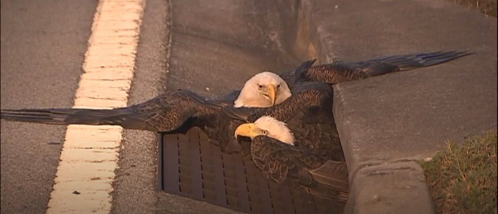
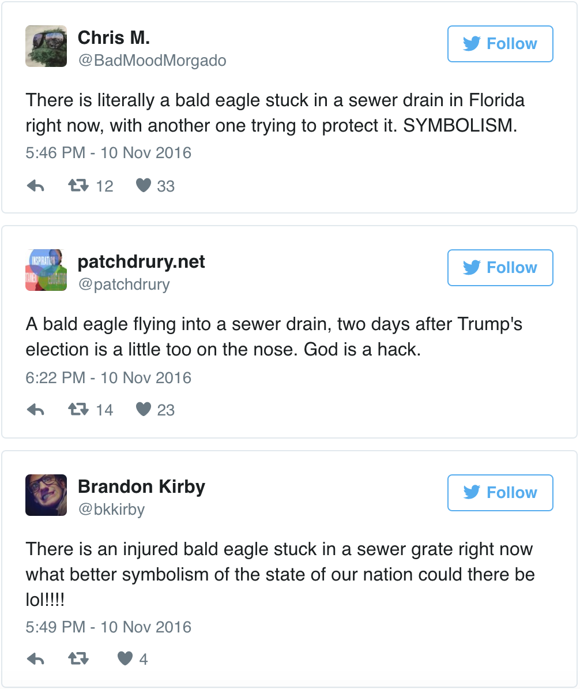

Bald Eagles Trapped in Florida Sewer Drain Draw Comparisons to Current State of America
“I feel like it’s the perfect metaphor for a Trump presidency”
Two bald eagles were trapped inside a Florida storm drain Thursday in a situation that many on social media called a fitting post-election metaphor.
The pair of eagles was stuck inside a drainage ditch in Orlando for several hours. One was able to fly out on its own, while the other needed to be freed by specialists about 6:20 p.m., according to local media outlets.
At least one video shows two of the birds sitting near the entrance of a sewer before they’re both startled by an approaching person. One flies away. The other struggles to move but then ducks into the sewer.
Officials reached into the drain and pulled the eagle out, according to Click Orlando.
It’s unclear if any of the birds were injured.
The bald eagle is the national bird symbol of the U.S. Earlier in the 2016 election cycle, one scared Donald Trump, who is now the president-elect.
Many took to Twitter to point out the possible symbolism in the sewer scene:
